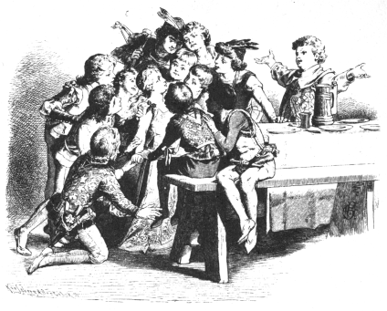

十二人兄弟
グリム Grimm
矢崎源九郎訳
むかしむかし、あるところに、王さまとお妃さまとがおりました。ふたりはたいそうなかよくくらしていました。十二人のお子さんがありましたが、みんなそろいもそろって男の子ばかりでした。
さて、あるとき、王さまがお妃さまにむかっていいました。
「こんど生まれる子どもが、もし女の子だったら、十二人の男の子はみんな殺してしまおう。そして、その女の子の財産がたくさんになって、この国がその子ひとりだけのものになるようにしてやろう。」
王さまは、ほんとうに、十二のお棺までもこしらえさせました。そのなかには、すでにかんなくずもつめてあって、ひとつひとつに、死人のための小さなまくらまでもいれてありました。王さまはこれをひとつのへやにはこびこませて、かぎをかけました。そして、そのかぎをお妃さまにわたして、このことはだれにもいってはならぬ、といいわたしました。
けれども、お妃さまは、それからというものは、一日じゅうすわったきりで、かなしみにしずんでおりました。ですから、いつもお妃さまのそばにばかりくっついているすえっ子の、ベンジャミンという子が、お妃さまにむかってたずねました。この子は、聖書から名をとってベンジャミンとよばれていたのです。
「おかあさま、どうしてそんなにかなしんでいらっしゃるの。」
「ぼうや、ぼうやにはそのわけを話してあげることができないのよ。」
と、お妃さまはいいました。
けれども、ベンジャミンはいつまでもうるさくせがみます。それで、とうとう、お妃さまは立っていってそのへやをあけ、もうかんなくずまでつまっている十二のお棺を見せてやりました。
「かわいいベンジャミン、このお棺はね、おまえのおとうさまが、おまえと十一人のおにいさまたちのためにこしらえさせたものなのよ。というのは、もしこんど、女の子が生まれれば、おまえたちはみんな殺されて、このなかにいれられて、ほうむられてしまうことになっているのよ。」
こう話しながら、お妃さまはさめざめと泣きました。すると、男の子はおかあさまをなぐさめて、いいました。
「泣かないでよ、おかあさま。ぼくたち、みんなでたすけあって、にげてしまうから。」
すると、お妃さまはいいました。
「十一人のおにいさまたちといっしょに、森へにげておいきなさい。そして、森のなかでいちばん高い木を見つけて、だれかひとりがかならずそこにのぼって、見はりをしているようになさい。そうして、このお城の塔のほうをよく見ているんですよ。もしも男の子が生まれれば、白い旗をかかげますからね。そうしたら、みんなでかえっていらっしゃい。でも、もし女の子が生まれたら、赤い旗をかかげますよ。そしたら、できるだけはやくおにげなさい。ああ、どうか神さまがおまえたちをおまもりくださいますように。あたしはまい晩おきていて、おまえたちのためにおいのりをしていますよ。冬は、みんなが火にあたれるように、夏は、暑さにくるしまないようにね。」
こうして、お妃さまが子どもたちのためにおいのりをすませますと、みんなは森へでかけていきました。みんなはかわるがわる見はりにたち、いちばん高い木の上にすわって、塔のほうをながめていました。
十一日たって、ベンジャミンの番になりました。見ると旗があがりました。しかし、それは白い旗ではなくて、赤い血の旗です。みんなが殺されることにきまったというあいずです。にいさんたちはこのことをききますと、かんかんにおこって、いいました。
「ぼくたちは、女の子ひとりのために、死ななければならないっていうのか。ようし、かならずこの復讐はしてやるぞ。女の子は見つけしだい、かたっぱしから赤い血をながさせてやる。」
それから、十二人の兄弟たちは、森のおくへおくへとはいっていきました。いつのまにか、森のまんなかのいちばんくらいところまできました。すると、そこに魔法をかけられた小さな小屋がたっていました。家のなかには、だれもいませんでした。そこで、みんなはいいました。
「ぼくたちはここに住むことにしよう。それから、おい、ベンジャミン、おまえはいちばん小さいし、それに力もいちばんよわい。おまえはうちにのこって、うちのなかのしごとをやっていておくれ。ぼくたちほかのものは、みんなそとへいって食べものをとってくるから。」
こうして、にいさんたちは森のなかへはいって、ウサギだの、野ジカだの、小鳥だの、かわいいおすのハトだの、食べられるものはなんでもうって、それをベンジャミンのところにもってきました。ベンジャミンの役めは、それを料理して、おにいさんたちのぺこぺこのおなかをいっぱいにしてあげることでした。
それから十年というあいだ、兄弟たちはこの小屋でいっしょにくらしましたが、みんなはそれほど長いとも思いませんでした。
さて、兄弟たちのおかあさまになる、お妃さまの生んだ女の子は、いまではすっかり大きくなりました。気だてのやさしい、美しいお姫さまでした。ひたいの上には、金の星をひとつつけていました。
ある日のこと、せんたくものがたくさんありましたが、お姫さまがふと見ますと、そのなかに男もののシャツが十二枚あります。それで、ふしぎに思って、お妃さまにたずねてみました。
「この十二枚のシャツはだれのもの。おとうさまのにしては小さすぎますもの。」
すると、お妃さまは心もおもく、こうこたえました。
「姫や、これはねえ、おまえの十二人のおにいさまたちのですよ。」
「その十二人のおにいさまって、どこにいらっしゃるの。あたし、おにいさまのことなんて、まだいちどもきいたことないわ。」
と、お姫さまはいいました。
すると、お妃さまはこたえました。
「どこにいるかごぞんじなのは、神さまばかりよ。きっと、ひろい世のなかを、あっちこっちとまよい歩いているでしょう。」
それから、お妃さまはあのへやにむすめをつれていって、扉をあけて、かんなくずと、死人のためのまくらまでもはいっている十二のお棺を見せました。
「このお棺はね、おまえのおにいさまたちのものにきまっていたのよ。でも、おまえの生まれるまえに、みんなこっそりにげていってしまったの。」
と、お妃さまがいいました。
こういって、お妃さまは、あのときのことをのこらず話してきかせました。
それをきいて、お姫さまはいいました。
「おかあさま、泣かないで。あたしがいって、おにいさまたちをさがしてきますから。」
そこで、お姫さまはその十二枚のシャツをもって、お城をでますと、まっすぐ大きな森のなかへはいっていきました。お姫さまは、その日一日じゅう歩きつづけて、日のくれるころ、魔法のかけられているあの小屋のまえにきました。お姫さまが小屋のなかにはいっていきますと、ひとりの男の子がいて、
「きみは、どこからきたの。そして、どこへいくの。」
と、たずねました。
男の子は女の子があんまり美しくて、おまけに、お姫さまのきるような着物をき、ひたいには金の星をつけているので、びっくりしました。
すると、お姫さまはこたえていいました。
「あたしは王女です。いま十二人のおにいさまたちをさがしているところです。おにいさまたちを見つけだすまでは、青いお空のはてまでもいってみるつもりです。」
こういって、お姫さまはおにいさまたちの十二枚のシャツを見せました。
そこで、ベンジャミンはこれがじぶんの妹だとわかりましたので、
「ぼくがベンジャミンだよ。おまえのいちばん小さいにいさんだよ。」
と、いいました。
これをきいたとたん、お姫さまはあまりのうれしさに、わっと泣きだしました。ベンジャミンも泣きました。そして、ふたりはなつかしさのあまりだきあって、キッスをしあいました。それから、ベンジャミンがいいました。
「でもねえおまえ、まだ安心できないんだよ。なぜって、ぼくたちは、女の子にあったら、だれでもかまわないから殺してしまおうって約束がしてあるんだもの。だってそうだろう。ぼくたちは女の子のために、国を追われてしまったんだからね。」
それをきいて、お姫さまはいいました。
「十二人のおにいさまたちをおたすけできるのなら、あたし、よろこんで死ぬわ。」
「いけない、いけない。」
と、ベンジャミンはこたえました。
「おまえを死なせたりするものか。とにかく、十一人のにいさんたちがかえってくるまで、このおけの下にかくれておいで。にいさんたちがかえってきたら、ぼくがうまく話をするからね。」
お姫さまはいわれたとおりにしました。やがて、夜になりますと、ほかのにいさんたちが狩りからかえってきました。食事のしたくは、ちゃんとできていました。みんながテーブルについて、食べているとき、にいさんたちがベンジャミンにたずねました。
「なにかかわったことはないかい。」
すると、ベンジャミンが、
「にいさんたちはなんにも知らないの。」
と、いいました。
「うん。」
と、にいさんたちはこたえました。
そこで、ベンジャミンはことばをつづけて、
「にいさんたちは森へいって、ぼくはうちにのこっていたんだけど、ぼくのほうがずっといろんなことを知ってるよ。」
と、いいました。
「じゃあ、話してくれよ。」
と、にいさんたちは口ぐちにいいたてました。
「それなら、ぼくたちがいちばんはじめにあう女の子だけは殺さないって約束してくれる？」
と、ベンジャミンがいいました。
「いいよ、いいよ。」
と、みんな声をそろえていいました。
「その子だけはゆるしてやろう。だから、さあ、話してくれよ。」
そこで、ベンジャミンがいいました。
「妹がここにいるんだよ。」
こういって、ベンジャミンがおけをあげますと、りっぱな着物をきて、ひたいに金の星をつけたお姫さまがあらわれました。それは、世にも美しく、やさしい上品なすがたでした。みんなは大よろこびで、お姫さまの首にだきついて、キッスをしました。そして、心のそこから妹をかわいいと思いました。

それからは、お姫さまはベンジャミンといっしょにうちにいて、ベンジャミンのしごとの手つだいをしました。十一人のにいさんたちは森にはいって、けものや、シカや、鳥や、小バトなどをつかまえてきました。これがみんなの食べものになりました。それをいろいろに料理するのが、ベンジャミンと妹の役めなのです。
妹は煮たきをするたきぎや、野菜がわりにつかう草葉をさがしてきたり、おなべを火にかけたりしました。そうして、十一人のにいさんたちがかえってくるころには、いつでも食事のしたくができているようにしておきました。そればかりか、妹はうちのなかをきれいにかたづけたり、寝床に白いきれいな敷布をきちんとかけたりしました。ですから、にいさんたちはいつも満足しきって、妹といっしょになかよくくらしていました。
あるときのことです。ふたりはうちにおいしいごちそうをこしらえておきました。みんながあつまりますと、それぞれ席について、食べたりのんだりしました。みんなは大よろこびでした。
ところで、この魔法をかけられている小屋には小さな庭があって、そのなかにユリのような花が十二さいていました。この花は、またの名をシュトデンテンともいいます。妹は、この十二の花をおりとって、食事のあとでにいさんのひとりひとりにこの花をひとつずつあげようと思いました。こうして、にいさんたちによろこんでもらおうと思ったのです。ところが、どうしたというのでしょう、妹が花をおりとったとたん、十二人のにいさんたちのすがたは十二羽のカラスにかわってしまって、みんなは森のはるかかなたへととびさってしまったではありませんか。しかもそれといっしょに、うちも庭も、あとかたもなくきえうせてしまったのです。
かわいそうに、女の子はおそろしい森のなかにひとりぼっちになってしまいました。あたりを見まわしますと、そばにひとりのおばあさんが立っていました。おばあさんは、
「これ、これ、おまえはいったいなにをしたのだね。どうして、十二の白い花をそっとしておかなかったのだい。あれは、おまえのにいさんたちだったのさ。にいさんたちは、いまじゃカラスになっちまって、もう永久にかわることはないよ。」
と、いいました。
女の子は泣くなくいいました。
「ほんとうに、にいさんたちをたすける方法はないんでしょうか。」
「だめだねえ。」
と、おばあさんはいいました。
「その方法は、たったひとつあるにはあるけど、むずかしすぎるから、とてもそれでにいさんたちをすくうことはできなかろうよ。なにしろ、七年というあいだ、おまえはひと言もしゃべらずにとおさなければならないんだからね。口をきいてもいけないし、わらってもいけない。もしもおまえが、たったひとことでも口をきこうものなら、そうしてまた、七年にほんの一時間だけたりなくっても、なにもかもがむだになってしまうのさ。しかも、そのたったひとことのために、おまえのにいさんたちは殺されてしまうんだよ。」
これをきいて、女の子は心のなかでいいました。
（あたし、きっと、にいさんたちをたすけてみせるわ。）
それから、女の子は歩いていきました。一本の高い木を見つけますと、その上にすわって、糸をつむぎはじめました。でも、もちろん、口もきかなければ、わらいもしませんでした。
さて、あるときのこと、ひとりの王さまがこの森で狩りをしました。王さまは一ぴきの猟犬をつれていましたが、その犬が女の子ののぼっている木のところへ走ってきて、そのまわりをとびはねては、しきりに木の上にむかってほえたてました。
そこで、王さまが近よってみますと、おどろいたことに、ひたいに金の星をつけた美しいお姫さまが、木の上にすわっているではありませんか。お姫さまのあまりの美しさに、王さまはうっとりとして、じぶんの妃になる気はないかとよびかけました。お姫さまはなんともへんじをしませんでしたが、ほんのちょっとうなずいてみせました。
それを見た王さまは、じぶんでその木にのぼって、お姫さまを木からおろしました。それから、じぶんの馬にのせて、いっしょにお城へつれかえりました。
やがて、ご婚礼の式が、めでたく、りっぱにとりおこなわれました。けれども、花よめはひとことも口をききませんし、わらいもしませんでした。
ふたりはいく年かのあいだたのしいくらしをつづけました。ところが、王さまのおかあさまは、もともとたちのよくないひとでしたので、ぼつぼつわかいお妃さまのわる口をいいはじめました。そして、王さまにこうつげ口をしました。
「おまえがつれてきたのは、いやしい身分のむすめですよ。かげでは、こっそりどんなわるいことをしているか、わかったものではありません。口がきけないにしても、いちどぐらいはわらいそうなものです。とにかく、わらわない人は、心のよくない人ですよ。」
王さまは、さいしょのうちは、そんなことを信じようとはしませんでした。けれども、年よりがいつまでもそのことをいいはりますし、それに、いろいろとわるいことをお妃さまのせいにしますので、とうとう、王さまもいいまかされてしまって、お妃さまに死刑をいいわたしました。
こうして、お城の庭で大がかりな火がたかれました。この火のなかで、お妃さまが焼き殺されることになったのです。王さまは二階の窓ぎわに立って、涙ながらにこのありさまをながめていました。だって、王さまはいまでもなお、お妃さまがかわいくてならなかったのですもの。
いよいよ、お妃さまが柱にしばりつけられました。火がはやくも赤い舌をチョロチョロさせて、お妃さまの着物をなめはじめました。
ちょうどそのとき、七年という年月のさいごの瞬間がすぎさったのです。と、空にバタバタという羽の音がして、十二羽のカラスがとんできて、地面にまいおりました。そして、その足が地面にふれたかと思うと、たちまち、十二人のにいさんたちのすがたになりました。みんなは、妹のおかげですくわれたのです。にいさんたちはすぐさま火をかきちらし、ほのおをもみけして、かわいい妹をたすけだして、キッスをしたり、だきしめたりしました。
さて、いまこそ、お妃さまは口をひらいて、話すことができるのです。そこで、どうしていままでひとことも口をきかず、またいちどもわらわなかったか、そのわけを王さまに話しました。王さまは、お妃さまになんの罪もないことをきいて、それはそれはよろこびました。そして、この人たちは、死ぬまで、みんないっしょになかよくくらしました。
心のよくないまま母のほうは、裁判にかけられて、煮えくりかえった油と、毒ヘビのいっぱいはいっているたるにいれられて、むざんな死にかたをしました。
底本：「グリム童話集（1）」偕成社文庫、偕成社
1980（昭和55）年6月1刷
2009（平成21）年6月49刷
※表題は底本では、「十二人兄弟」となっています。
入力：sogo
校正：チエコ
2020年6月27日作成
青空文庫作成ファイル：
このファイルは、インターネットの図書館、青空文庫（https://www.aozora.gr.jp/）で作られました。入力、校正、制作にあたったのは、ボランティアの皆さんです。
●表記について
- このファイルは W3C 勧告 XHTML1.1 にそった形式で作成されています。